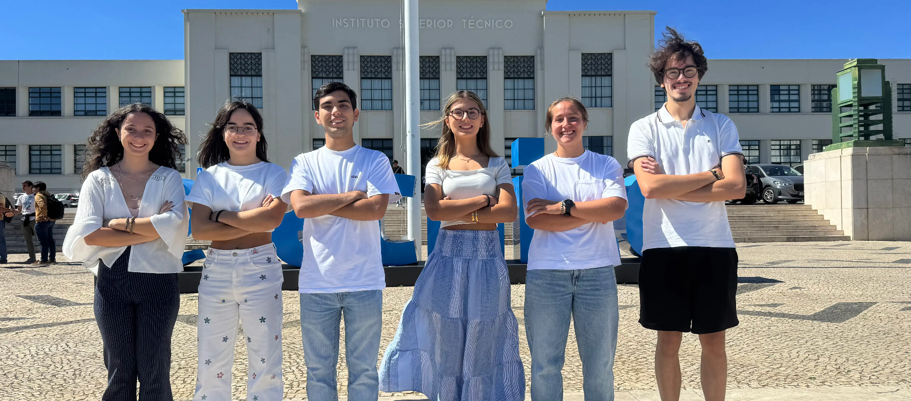
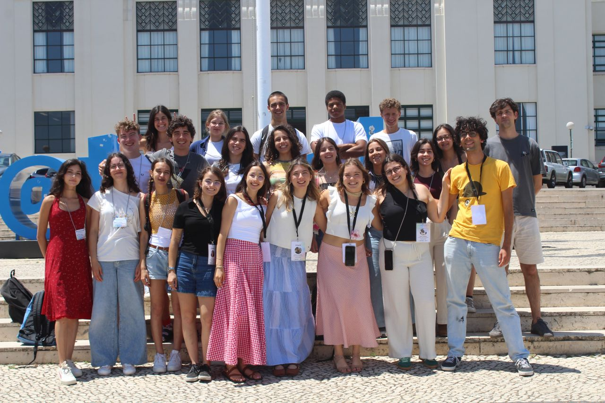
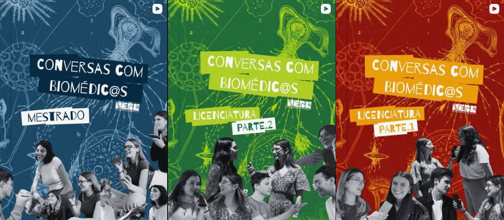
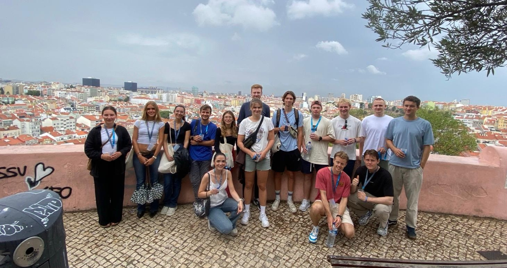
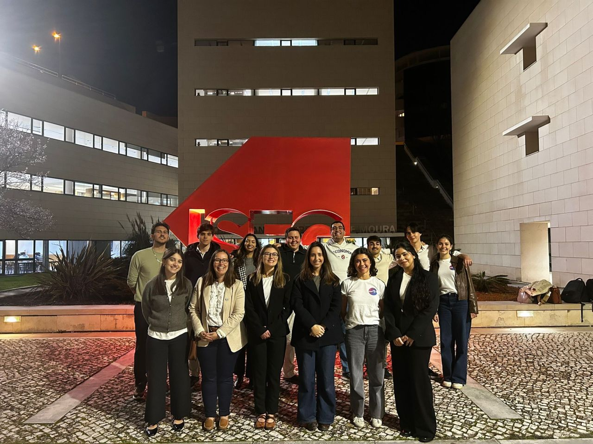

I am currently completing my Master's degree in Computer Science and Engineering at Instituto Superior Técnico, focusing on Artificial Intelligence, Data Science, and Computational Biology, and I am also studying Medicine at NOVA Medical School. Before that, I studied Biomedical Engineering, which is where my interest in combining biology and computation started. Since then, I have worked on projects involving synthetic clinical data, computational genomics, and biological data analysis. These experiences made me especially interested in using computational tools to solve problems in biology and healthcare. I am also a Teaching Assistant for Computational Biology at IST for the second time, where I help Master's students work with statistical and computational methods for biological data.
Outside my academic work, I have been involved in student organisations, mentoring, outreach, and technical coordination. These experiences made me enjoy collaborative environments where I can combine technical work with communication, teamwork, and responsibility.
Instituto Superior Técnico · Aug 2024 – Present · Current average 17.0/20
Specialisations: Artificial Intelligence, Bioinformatics & Computational Biology
Thesis: Epigenomic Signatures in Renal Cancer: Exploring the Predictive and Regulatory Roles of Understudied Markers · Expected completion 2026
NOVA Medical School · Sep 2024 – Present · Current average 15.6/20
Instituto Superior Técnico · Sep 2021 – Feb 2024 · Final average 17.4/20
Final project: A Novel Human-Machine Interface for Surgical Flow Disruption Prevention
Final grade: 19/20
Instituto Superior Técnico
Lead lab sessions on sequence alignment, probabilistic models, statistical learning for omics and clinical datasets, and computational functional genomics. Support Master's students with Python and R, data analysis workflows and the biological interpretation of results, and evaluate lab reports, assignments and exams with constructive feedback.
Hospital CUF Tejo · PecliCUF Program
Rotated through angiography, cardiology and the medical-surgical inpatient ward, seeing up close how diagnostic and clinical workflows operate across different care settings. Observed cardiology diagnostic exams, including exercise stress test, Holter , ambulatory blood pressure monitoring, angiography and medical imaging, and explored how exams are selected and interpreted in clinical practice, with their indications, advantages and limitations.
INESC-ID · FRAIL Project
Worked on the development of deep learning pipelines leveraging longitudinal health data for knowledge extraction and medical decision support, and investigated understudied molecular markers and pharmacological covariates using statistical approaches, as part of my Master's thesis research.
Hospital da Luz · Learning Health
Developed a synthetic data generation pipeline from OMOP-converted clinical records to enable privacy-preserving healthcare analytics, fine-tuned and evaluated language models (GPT-2 and Gemma 2) for synthetic healthcare record generation, and designed statistical validation frameworks to assess data quality, predictive utility and privacy preservation.
Gastroenterology Unit · Hospital de Santa Maria (CHULN)
Observed endoscopic imaging and therapeutic procedures, exploring the role of endoscopic technologies in diagnosis, intervention and clinical decision-making.

Biomedical Engineering Student Group (NEBM-IST) · 2025 – 2026
Coordinated the association's digital infrastructure: developed its website, provided technical support and organised academic resources for Biomedical Engineering students.

Biomed Summer Camp · 2025
Co-built the first edition of the Biomedical Engineering Summer Camp for 16 students, contributing to the programme, coordinating with faculty as part of the pedagogical team, and supporting students throughout the event week. In my role as a Computational Biology Teaching Assistant at IST, I also delivered a workshop introducing students to computational approaches in biology.
Watch aftermovie
Biomedical Engineering Student Group (NEBM-IST) · 2023 – 2024
Worked on external relations for the Biomedical Engineering Student Group, supporting partnerships with companies and creating opportunities for students. I helped organise two talks with senior industry speakers and networking initiatives, shared summer internship opportunities, and produced student interviews about the degree and their experiences.
Watch the interviews
NAPE-IST · 2021 – 2024
Mentored 33+ undergraduate, Master's, and mobility students over three years, supporting their integration into academic life at IST. This included both Portuguese and international students, at different stages of their studies.

Hult Prize Local Competition, ISEG · 2026
Joined the jury for the 2026 Hult Prize Local Competition at ISEG, evaluating student startup pitches and discussing their ideas, feasibility and potential impact.
Developing a computational epigenomics framework to characterise DNA methylation alterations across renal cell carcinoma subtypes using TCGA data. The project integrates differential methylation analysis, clinical and survival characterisation, machine learning for tumour and clinical phenotype prediction, and functional enrichment to identify biologically and clinically relevant epigenetic signatures.
Investigated whether the Portuguese ÍCARO and FRIESA thermal-risk indices could help explain variations in ST-elevation myocardial infarction and stroke cases. Combined exploratory analysis, statistical regression, model diagnostics and XGBoost, while assessing the impact of demographic, temporal and spatial factors on model performance.
View on GitHubAnalysed TCGA kidney cancer transcriptomic and clinical data, covering RNA-seq quality control, gene expression quantification and normalisation, PCA, differential expression, pathway enrichment and survival analysis. We also derived a gene-expression signature using Lasso and trained an SVM to distinguish renal cancer subtypes, achieving 88.9% accuracy.
Reimplemented and extended an agent-based model of competing foraging strategies, based on Kim et al. (2025). Developed a modular simulation framework for agent behaviour, resource dynamics, evolutionary traits, experiment execution and statistical analysis.
View on GitHubBuilt a text classification pipeline to predict movie genres from metadata and plot descriptions. Explored text preprocessing, synonym-based data augmentation, TF-IDF representations and hyperparameter tuning, comparing Support Vector Machines and Multinomial Naive Bayes. The best SVM model achieved 70.3% classification accuracy.
View on GitHubExplored an augmented reality human-machine interface designed to reduce information-related disruptions and improve safety in surgical environments. Developed and integrated biometric data acquisition components, combining hardware and software for physiological signal processing and analysis.
Applying machine learning and deep learning to clinical and biomedical data.
Using computational and statistical methods to study biological and molecular data.
Turning complex health and biological data into useful and interpretable information.
leonorncarvalho@tecnico.ulisboa.pt
Location
Lisbon, Portugal